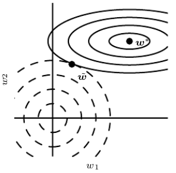

$$ \tilde{J}(\mathbf{w};\mathbf{X},\mathbf{y}) =
J(\mathbf{w}; \mathbf{X}, \mathbf{y}) + \frac{\alpha}{2}\mathbf{w}^\top \mathbf{w}
$$
$$
\nabla_w\tilde{J}(\mathbf{w};\mathbf{X},\mathbf{y}) =
\nabla_w J(\mathbf{w}; \mathbf{X}, \mathbf{y}) + \alpha\mathbf{w}
$$
- also known as ridge regression or Tikhonov regularization
- not robust to outliers
